Yuki
A native, keyboard-first API console for macOS.
Written in Rust. Your requests live as plain YAML in a git repository, and your AI agent can send them too.
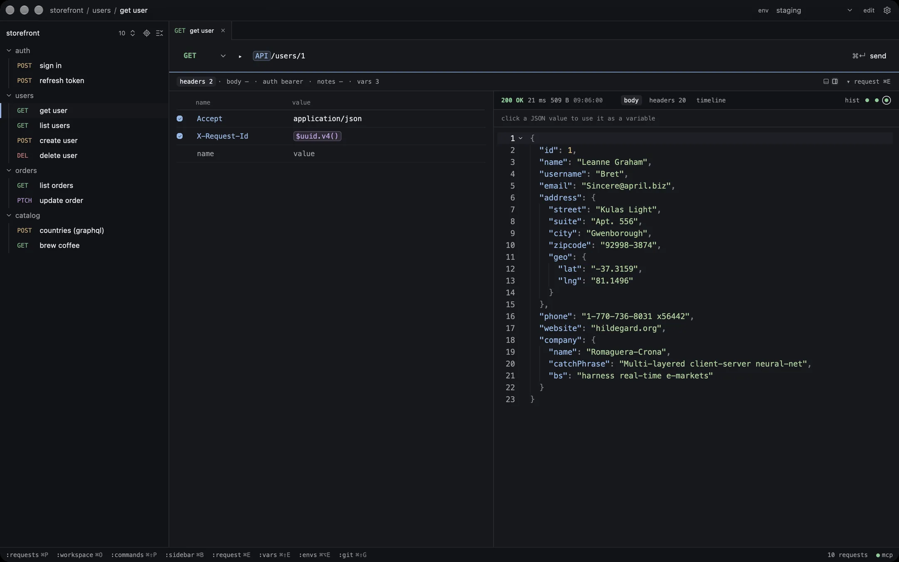
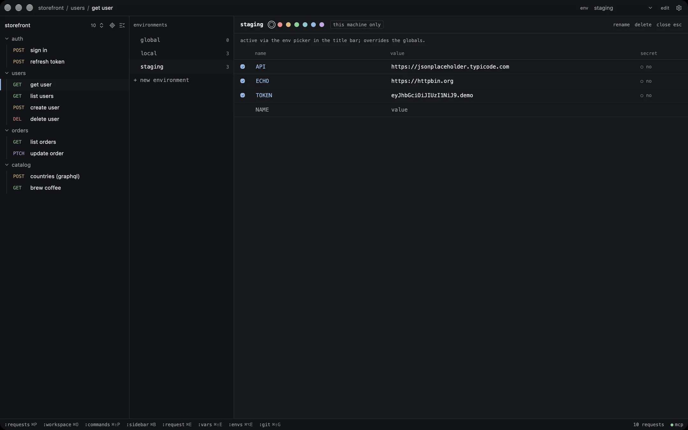
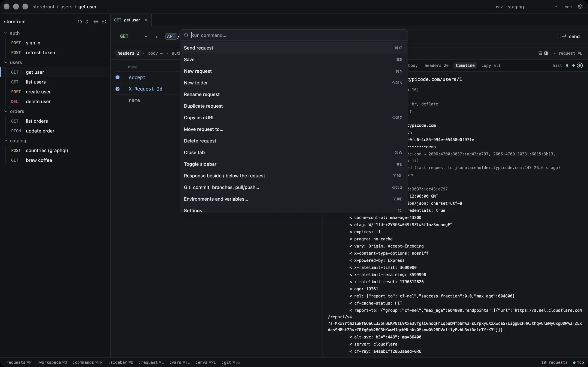
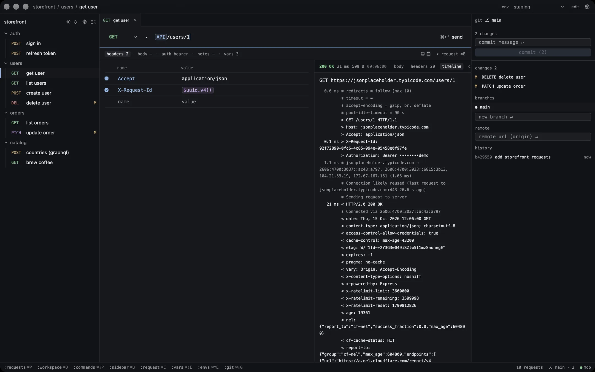
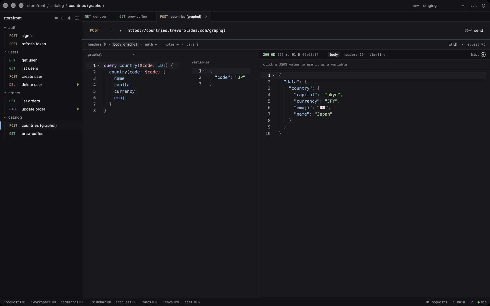
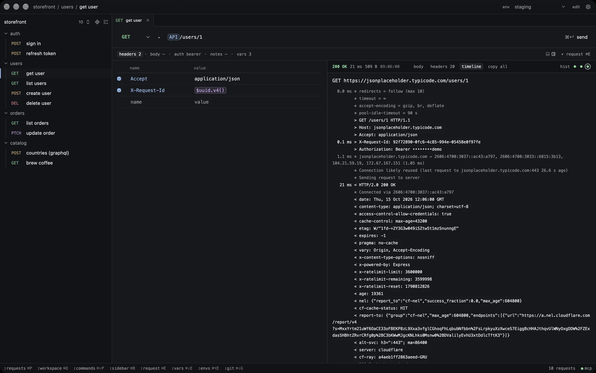
Inside the console
One document per request: method ▸ URL, a line of meta, the response beside or below it. ⌘⌥L flips the layout.
One document per request: method ▸ URL, a line of meta, the response beside or below it. ⌘⌥L flips the layout.
Personal environments stay on this machine; shared ones are committed with the workspace. ⌘⌥E opens them.
⌘⇧P runs any command and ⌘P opens any request. Every action has a key.
Each workspace is its own git repository. Commit, branch, pull and push from ⌘⇧G, no git install needed.
GraphQL with variables, JSON, form, multipart and binary bodies; bearer, basic, API key, digest, AWS and OAuth auth.
The timeline shows the request as it went out, variables resolved and credentials masked.
The parts you use daily
Small tools for the hundred sends a day. Collections from Postman, Insomnia, Yaak, Bruno, OpenAPI or Voleeo come in with ⌘⇧P.
-
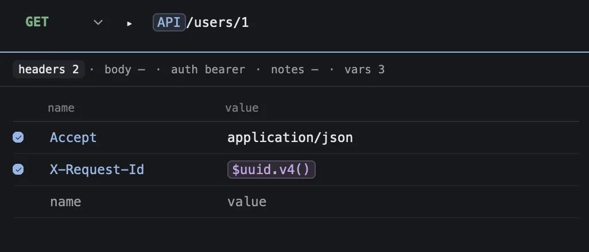
Variables as chips
{{ API }} in the URL, params, headers, body or auth, resolved at send time.
-
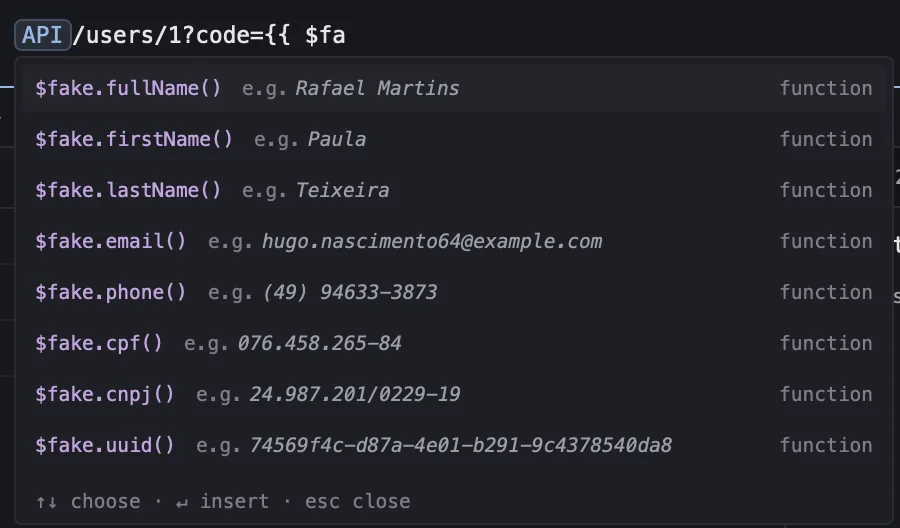
Fake data, fresh per send
$fake.email(), $uuid.v4(), $timestamp.iso() and twenty more. Type $ and each shows a sample.
-
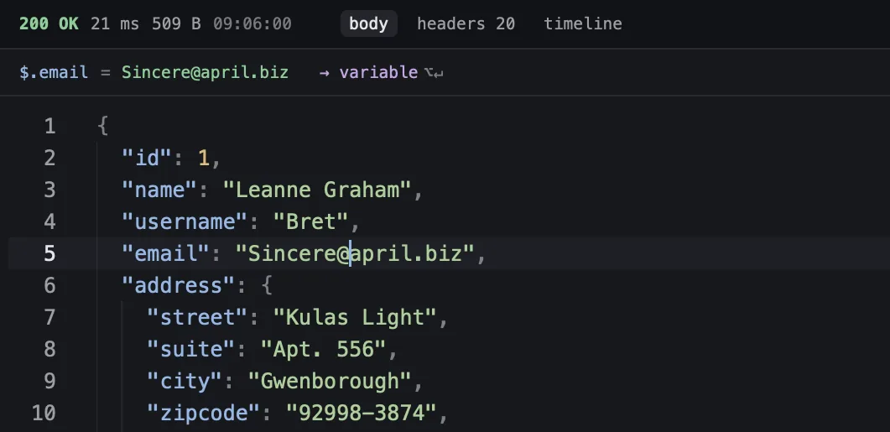
Values from a response
Click a field, press ⌥↵. A login's token becomes a variable that refreshes itself on send.
-
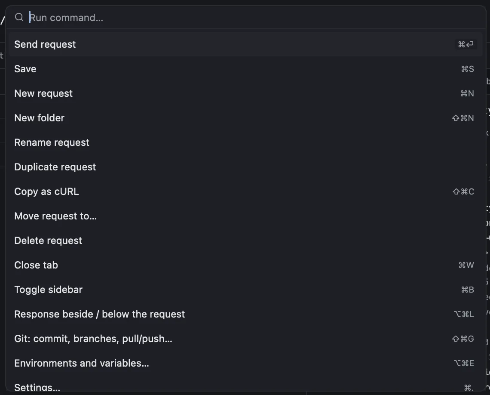
A key for everything
⌘↵ sends, ⌘P finds, ⌘⇧P runs. The mouse is optional.
-
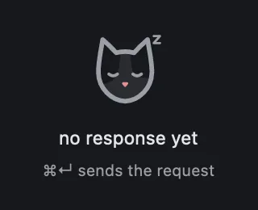
Quiet until it matters
Colour only for status, methods and variables. An empty response is a cat asleep.
From URL to commit
GET ▸ API/users/1
no response
First, import a collection or type a URL.
GET ▸ API/users/1
Authorization TOKEN
Then the environment fills the variables.
GET ▸ API/users/1
"name": "Leanne Graham"
⌘↵ sends it through the native engine.
M req_get-user.yaml
commit · add get user
It lands on disk as YAML, ready to commit.
Your agent can send it too
While Yuki is open, Claude Code, Codex, Cursor or Claude Desktop can list, create, edit and send your requests over MCP, with environments, cookies, history and snapshots. The client launches yuki mcp, a bridge to the running app: no token, no port.
claude mcp add -s user yuki -- \
/Applications/Yuki.app/Contents/MacOS/yuki mcpThe ● mcp chip in the status line copies this for your client, already filled in.
- add a sign-in request to auth and send it on staging
- request.create POST ECHO/auth/login → auth created
- request.send env staging 200 · 212 ms
- Created “sign in” in auth and sent it on staging: 200, and a token came back. It's in your sidebar now.
Named after a tuxedo cat
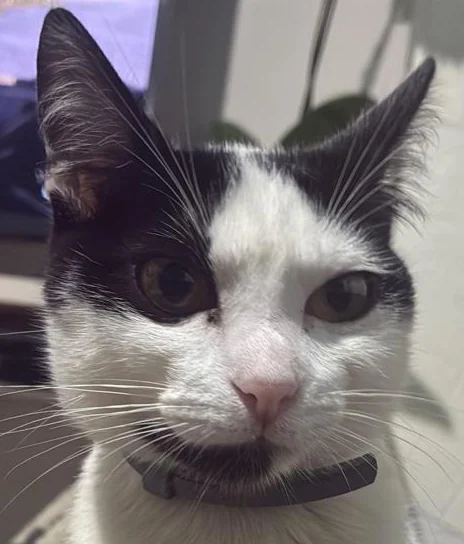
Open source, MIT
The app and the engine, all of it. No feature sits behind a paywall, and personal use of the official build is free.
Built on Voleeo's engine
The Rust crates that send, resolve and store requests began in Voleeo, also MIT. Yuki is a new native app around them, on GPUI, the framework behind Zed.